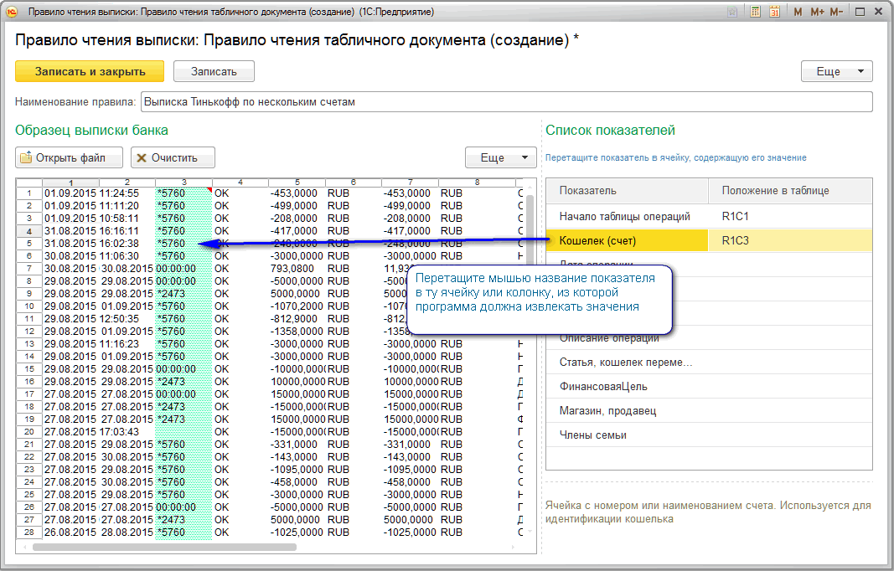

Редактирование правила чтения
Для редактирования правила нужно заполнить таблицу образца подходящими данными и указать программе, из какой ячейки брать значения для показателей операций.
Загрузить данные в таблицу можно из файла или просто вставив данные из буфера обмена.
Справа автоматически заполняется список доступных показателей: кошелек, дата, статья, сумма и виды аналитик, если в программе используется дополнительная аналитика. В этом списке следует указать адреса ячеек в формате R<НомерСтроки>C<НомерКолонки>, из которых программа должна брать значения для заполнения показателей. Задавать адреса ячеек можно как с помощью мыши, так и редактируя колонку "Положение в таблице" вручную
Выписка банка может содержать шапку, По этому в первую очередь нужно указать программе ячейку, с которой начинается таблица выписки.
Для этого выделите в правом списке сроку "Начало таблицы операций", зажмите эту строку левой кнопкой мыши, перетащите на ячейку, в которой находится первая колонка и первая строка таблицы и отпустите кнопку мыши. В колонке "Положение в таблице" автоматически запишется адрес выбранной ячейки.

Аналогично выделяйте показатели в таблице слева и перетаскивайте в ячейку, из которой программа должна считывать значения. Если эта ячейка будет внутри отмеченной таблицы (т.е. не правей и не выше ячейки начала таблицы) редактор правила поймет, что значение нужно брать не из одиночной ячейке а из колонки таблицы.
Иногда для определения значения показателя требуется считать информацию не из одной колонки, а из нескольких. В этом случае следует задать адреса всех нужных ячеек (колонок) через точку с запятой в колонке "Положение в таблице". Сделать это можно либо вручную, либо с помощью перетаскивания показателя в нужные ячейки зажав на клавиатуре клавишу Ctrl.
Когда в списке справа выделяете показатель, редактор подсвечивает зеленым цветом заданные для него ячейки или колонки. Перед записью правила стоит проверить правильность назначенных ячеек и колонок и, при необходимости поправить адреса в колонке "Положение в таблице".
Задавать адреса для всех показателей не обязательно. Программа будет считывать значения только из указанных ячеек, прочие останутся незаполненными.